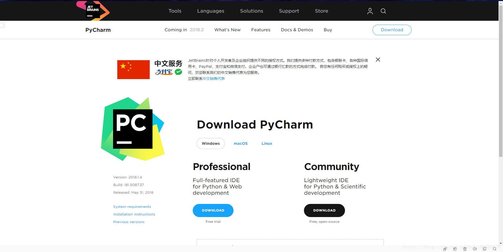
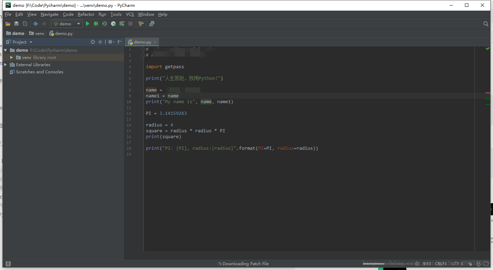

Python简介及开发环境搭建原文出处:本文由博客园博主村雨1943提供。
原文连接:https://www.cnblogs.com/cunyu1943/p/11601884.html
Python简介
Python是一门动态解释性的强类型定义的计算机程序设计语言，是一种完全面向对象的语言，由荷兰人"龟叔"-Guido van Rossum于1989年开发，于1991年发行第一个公开发行版。Python具有丰富而强大的库，能够将用其他开发语言设计的各种模块很好的联接在一起。
Python应用领域
- 云计算；
- WEB开发；
- 系统运维；
- 图形GUI；
- 金融分析；
- 科学运算、人工智能；
设计目标
- 简单直观且和主要竞争者一样强大；
- 开源；
- 容易理解
- 适用于短期开发任务；
编译型语言和解释型语言对比
- 速度--编译型比解释型执行速度快，效率高；
- 跨平台性--解释型比编译型跨平台性好；
特点
- 完全面向对象；
- 拥有强大标准库；
- 大量第三方模块；
Python优缺点
优点
- 优雅、明确、简单；
- 开发效率高；
- 可移植性强；
- 可扩展性强；
- 可嵌入性好；
缺点
- 相对于C/C++等语言而言，运行速度慢；
- 线程间无法利用多CPU的问题；
- 代码不能加密；
Python解释器
- CPython
即C语言实现的Python，当我们从Python官网下载并安装后，就已经将这一解释器安装到了我们电脑中，在命令行中运行Python就是相当于启动了CPyhton解释器；
- IPython
基于CPython之上的一个交互式的解释器，其底层还是基于CPython，只不过交互性比起CPython更好。就好比Chrome和360极速浏览器，虽然不同，但360极速浏览器的内核却是Chrome；
- JPython
运行于Java平台的Python解释器，能够直接将Python代码编译为Java字节码并执行；
- PyPy
PyPy最突出的优点就是可以提升Python代码的执行速度，它采用了JIT技术，对Python代码进行了动态编译，这样一来Python代码的执行速度得以显著提升；
- IronPython
类似于JPython，它是运行于微软.Net平台上的解释器，能够将Python代码编译成.Net的字节码；
执行Python程序到的三种方式
Python的下载与安装
详情见我的另一篇博客NLP自然语言处理的开发环境搭建
开发工具
当然了，IDE肯定是首推Pycharm，详情见下载地址。

Pycharm分为社区版(Community)和专业版(Professional)，两者的区别在于专业版功能更加强大，但同时的，专业版是收费的。对于我们日常使用开发，社区版已经足够用了，如果实在是需要用到专业版的功能，那么你可以选择购买序列号或者去网上找专业版的破解版。Pycharm安装详情见Pycharm安装教程。
Pycharm主界面

欢迎关注微信公众号：村雨1943；创作不易，未经同意，转载请注明出处~